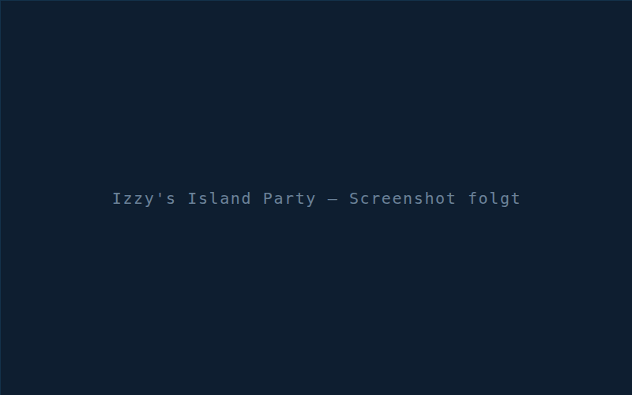
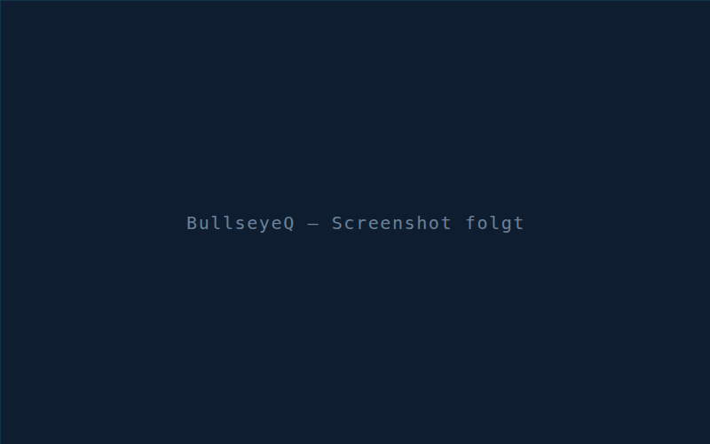
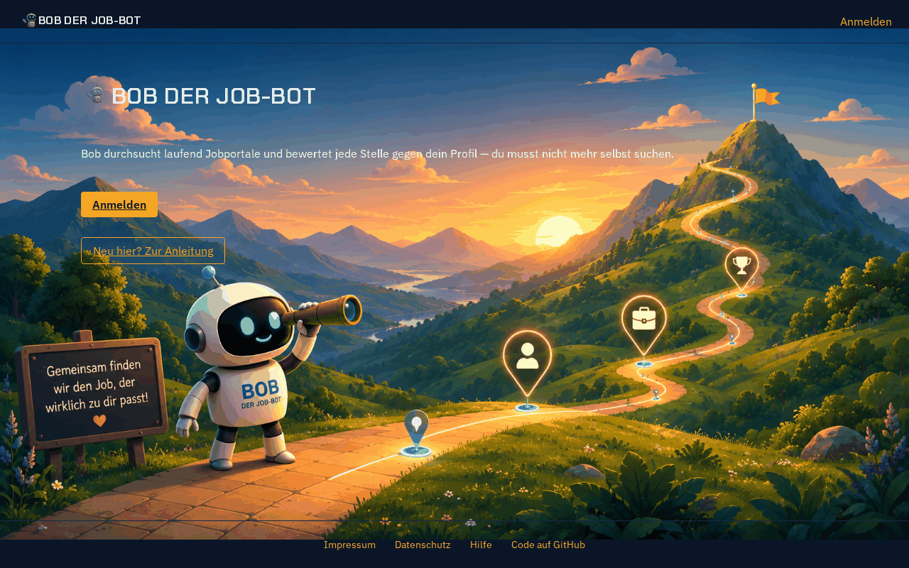
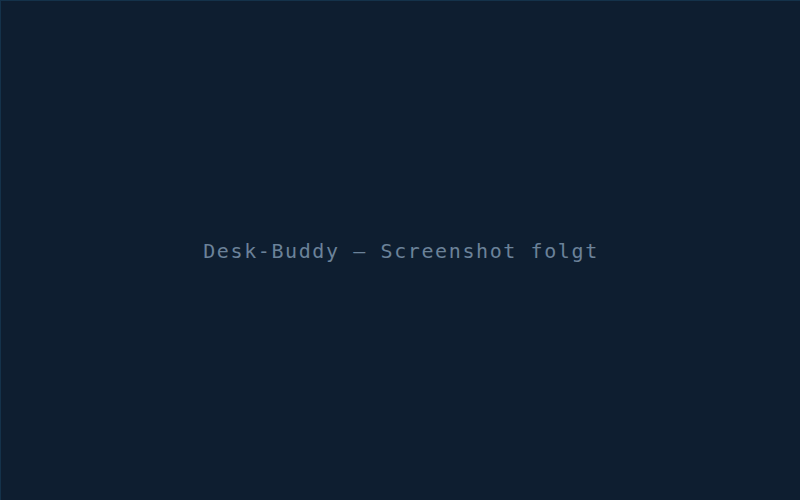

Tjark Dreyer
Games Programmer
Wer ich bin
Games Programmer mit fundierter Erfahrung in Unity und C# sowie einem besonderen Interesse an Game Design, interaktiven Lernsystemen und der Entwicklung eigener Tools. Mein fachlicher Hintergrund verbindet Games Programming mit Sportwissenschaft, Mathematik und Physik und damit technisches, analytisches und didaktisches Denken. Ich möchte Spiele und interaktive Anwendungen nicht nur als Unterhaltungsmedium, sondern als wirkungsvolles Werkzeug für Lernen, Training und Wissensvermittlung einsetzen. Dabei liegen meine Stärken besonders in der Entwicklung von Engine-Tools, der Optimierung von Workflows sowie in der Konzeption und Umsetzung intelligenter, datenbasierter Systeme und spielspezifischer KI-Algorithmen — von Pathfinding und State Machines über Behaviour Trees und GOAP bis zu Wave Function Collapse.
Tiefer tauchen
Games sind für mich weit mehr als Unterhaltung. Sie verbinden Motivation, Interaktion, Feedback, Problemlösung und eigenes Erleben auf eine Weise, die klassische Formen der Wissensvermittlung häufig nicht erreichen. Gerade bei komplexen oder trockenen Themen steckt darin enormes Potenzial: Wer nicht nur Informationen aufnimmt, sondern selbst handelt, ausprobiert und Konsequenzen erlebt, lernt nachhaltiger.
Diese Überzeugung begleitet mich seit dem Studium der Sportwissenschaft. Über Trainings- und Spieltheorie habe ich erlebt, wie viel Lernen und Entwicklung durch spielerische Systeme möglich wird — und als Kursleiter, unter anderem im Reha- und Windsurfbereich, habe ich Menschen beim Lernen und Trainieren begleitet. Heute verbinde ich diese Erfahrung mit der Ausbildung als Games Programmer an der SAE und der täglichen Arbeit mit Unity und C#.
Technisch liegen meine Schwerpunkte in Unity, C#, Game Design und der Entwicklung von Engine-Tools. Mich interessiert weniger, ob ein System läuft, als wie es besser wird — durch Workflow-Optimierung, eigene Werkzeuge oder datenbasierte Lösungen. Mathematik, Datenanalyse und KI-Algorithmen gehören für mich dazu; ein zusätzliches Studienjahr in Mathematik und Physik hilft mir, mich auch in komplexe Themen selbstständig einzuarbeiten.
In eigenen Projekten laufen diese Interessen zusammen: BullseyeQ wertet Wurfdaten aus und leitet daraus Trainingsübungen ab, der Desk-Buddy motiviert am Schreibtisch zu Bewegung, und in einem Shader-Lernspiel wollte ich eine Sandbox bauen, in der man durch das Kombinieren von Effekten eigene Shader entwickelt und dabei versteht, wie sie technisch funktionieren. Ich arbeite gern im Team, kommuniziere offen und möchte an Dingen arbeiten, die Menschen tatsächlich weiterbringen.
- Engine UnityC#Unreal EngineC++
- Tools & AI PythonGitLLM-WorkflowsMCP
- Web JavaScriptHTML/CSSSQLite
Projekte

Izzy's Island Party
Lokale Party-Minispiel-Sammlung für 1–4 Spieler. SAE-Abschlussprojekt im 2er-Team mit 6 Minispielen; Bowling Battle, Minigolf Mayhem und Swaggy Snapshots habe ich eigenständig verantwortet.
UnityC#

BullseyeQ
Dart-Trainings-App mit Progress-Tracking, Trainingsspielen und deterministischer Wurfdaten-Analyse, die daraus konkrete Trainingsempfehlungen ableitet. Solo gebaut, aus eigenem Bedarf.
UnityC#

Bob der Job-Bot
Job-Scanner mit Telegram-Bot und Web-App: sammelt Stellenanzeigen in einen geteilten Pool und filtert sie pro Nutzerprofil nach eigenen Kriterien. Scraping, Datenmodell, Bot und Oberfläche komplett selbst, bis in den laufenden Betrieb.
PythonTelegramSQLiteMCP

Desk-Buddy in Arbeit
Transparente Overlay-App in Unity: ein kleiner Helfer erinnert am Rechner ans Bewegen, erklärt Übungen und macht sie vor. Prototyp-Stand — bewusst ohne Repo-Link.
Unity